The relay-race puzzle
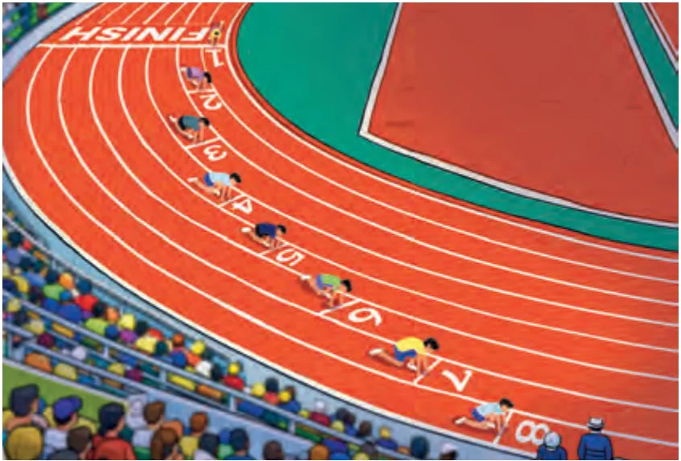
In a relay race the runners in the outer lanes start ahead of those in the inner lanes, yet everyone finishes at the same line. The gap between the starting points of neighbouring lanes is called the stagger.
The big idea
On the curved part of the track, an outer lane is a bigger circle than an inner lane, so it is longer. The stagger makes up for this extra length so that every runner covers exactly the same distance. To work out the stagger we must know how to find the length around a circle. That is where this chapter begins.
Does the stagger give anyone an unfair advantage?
Think and Reflect: My school has a 200 m track instead of a 400 m track. Do we need a smaller stagger for the same 4 × 100 m relay?
Perimeter of a shape
The perimeter of a shape is the total length around its border. Imagine a tiny insect walking once around the edge, never turning back, until it returns to where it started: the distance it walks is the perimeter.
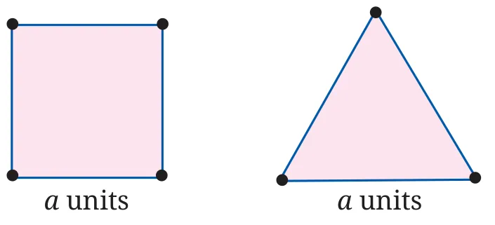
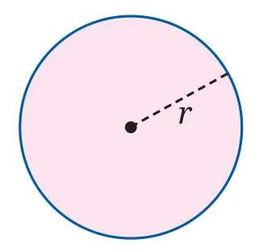
| Shape | Perimeter |
|---|---|
| Square of side a | 4a |
| Equilateral triangle of side a | 3a |
| Rectangle, length a, width b | 2(a + b) |
📝 Special case
A square is a rectangle with a = b. Put b = a in 2(a + b) and you get 4a. The square formula is a special case of the rectangle formula.
Ratio of perimeter to side stays fixed
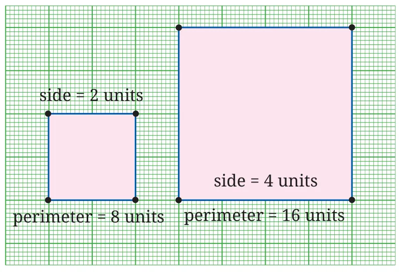
- For every square, perimeter : side = 4 : 1, whatever its size.
- For every equilateral triangle, perimeter : side = 3 : 1.
- Is there a fixed ratio for circles too? That is the question of the next section.
Think and Reflect: What is the connection between the perimeter of a circle and the 400 m athletics track?
The C/D ratio and the story of π
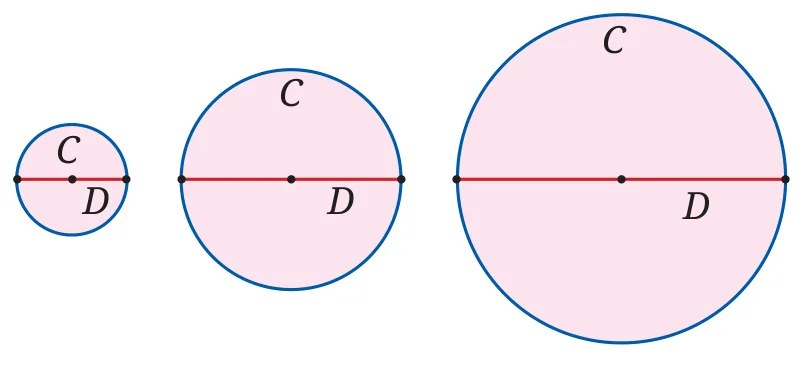
The perimeter of a circle is called its circumference (C). People realised long ago that C ÷ D is the same for every circle, big or small. This fixed number is called π (pi, said like "pie").
🏠 Home measurement
Measure the diameter D of a cotton reel. Wrap thin thread tightly around it 20 times, unwrap it and measure its length L. Then L ÷ (20 × D) gives π. Winding 20 times makes the small errors in measuring much less important. You should get a value between 3.1 and 3.2.
π's adventurous journey
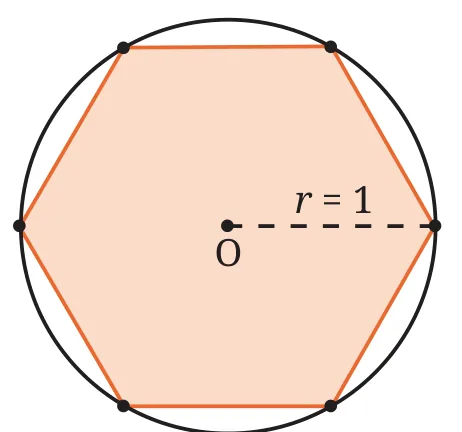
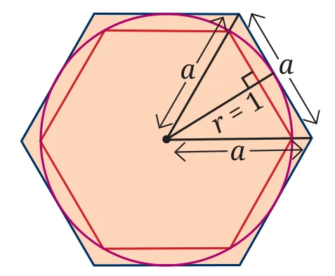
Why does Fig. 6.6 show that π > 3?
Why does Fig. 6.7 show that π is between 3 and 2√3?
Mesopotamia c. 1900 BCE
Hexagon inside a circle ⟹ π > 3. Used π = 3 + 1/8 = 3.125.
Archimedes 250 BCE
Polygons up to 96 sides: 310⁄71 < π < 31⁄7.
Ptolemy 150 CE
377/120 ≈ 3.14167, for astronomy tables.
Liu Hui, Zu Chongzhi 263, 480 CE
Polygon with 24,576 sides! Gave 22/7 and 355/113 ≈ 3.1415929, the best value in the world for 800 years.
Āryabhaṭa 499 CE
62832/20000 = 3.1416, and called it āsanna (approximate): π cannot be an exact fraction.
Brahmagupta 628 CE
Used √10 ≈ 3.1622: less accurate but easy to use in calculations.
Mādhava of Sangamagrāma c. 1400
The first exact formula for π, as an infinite series. Got π to 11 decimal places. The beginning of calculus!
William Jones, Euler 1706
The symbol π comes from the Greek word perimetros (perimeter). Euler made it popular.
π is irrational
A rational number can be written as a fraction a/b (a, b integers, b ≠ 0). Its decimal either ends or repeats in a pattern: 1/3 = 0.333…, 1/11 = 0.0909…, 1/7 = 0.142857 142857…
The digits of π go on forever with no repeating pattern. π cannot be written as a ratio of two integers, so it is irrational (proved by Lambert in 1761). √2 is another irrational number.
Common mistake
π is not equal to 22/7. We write π ≈ 22/7 and π ≠ 22/7. In the same way √2 ≈ 1.414 but √2 ≠ 1.414. Since π is irrational there is no "best" fraction for it: for any fraction close to π there is another one that is closer. 355/113 is much better than 22/7.
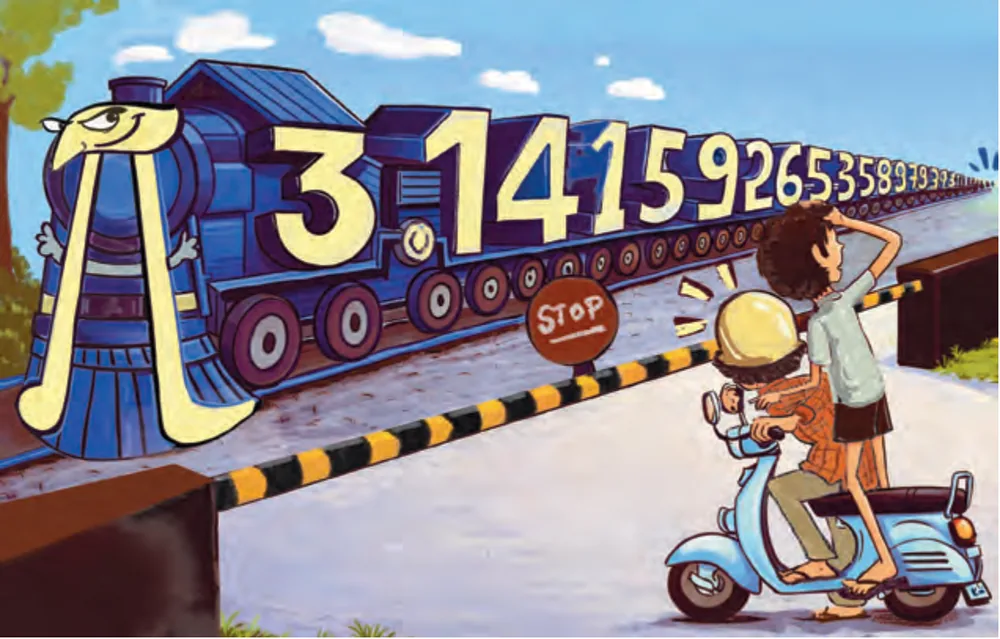
✨ Fun fact
"How I wish I could recollect pi": count the letters in each word: 3, 1, 4, 1, 5, 9, 2. So π ≈ 3.141592… Pi Day is 14 March (3-14) and Pi Approximation Day in India is 22 July (22/7).
Length of an arc
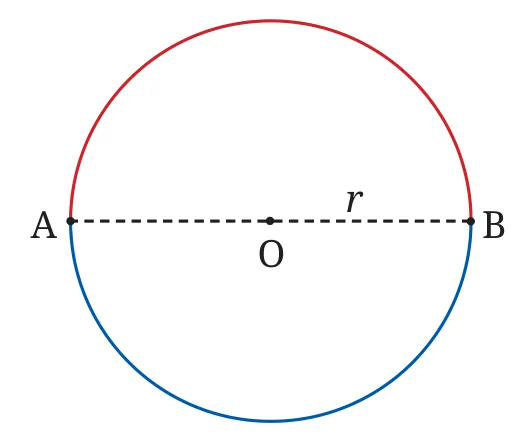
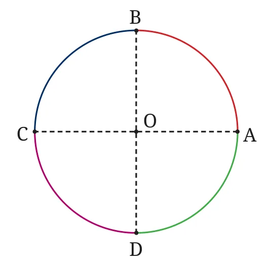
Why are the two semicircles equal? Reflect the circle in the diameter AB (or turn it through 180°): the red and blue halves swap places exactly. Turning through 90° moves each quarter circle onto the next one, so all four quarters are equal.
- Semicircle = 2πr × 180°/360°
- Quarter circle = 2πr × 90°/360°
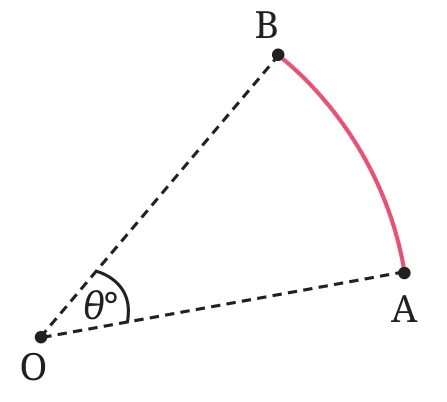
🎛️ Try it: arc and sector explorer
Move the sliders. Uses π = 22/7, like the book.
Arc length = 2 × 22⁄7 × 7 × 90/360 = 11 cm
Sector area = 22⁄7 × 7² × 90/360 = 38.5 cm²
Perimeter of sector = arc + 2r = 25 cm
A closer look at a 400 m athletics track
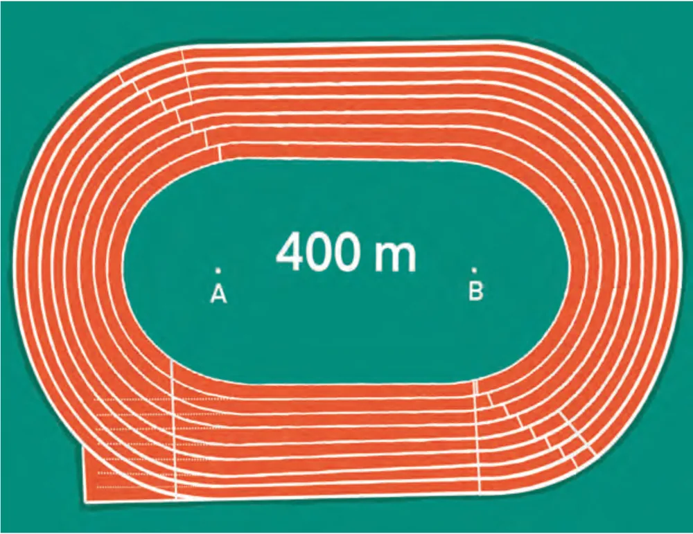
Distance run in lane 1
The athlete runs 0.3 m from the inner border, so the bends have radius 36.5 + 0.3 = 36.8 m.
Two straights: 2 × 84.39 = 168.78 m. Two semicircles = one full circle: 2 × 3.1416 × 36.8 = 231.22 m.
Total = 168.78 + 231.22 = 400 m
Think and Reflect: What is the difference in radius between lanes 1 and 2? What stagger does lane 2 need? Is the stagger between lanes 3 and 2 the same?
Puzzles and paradoxes on perimeter
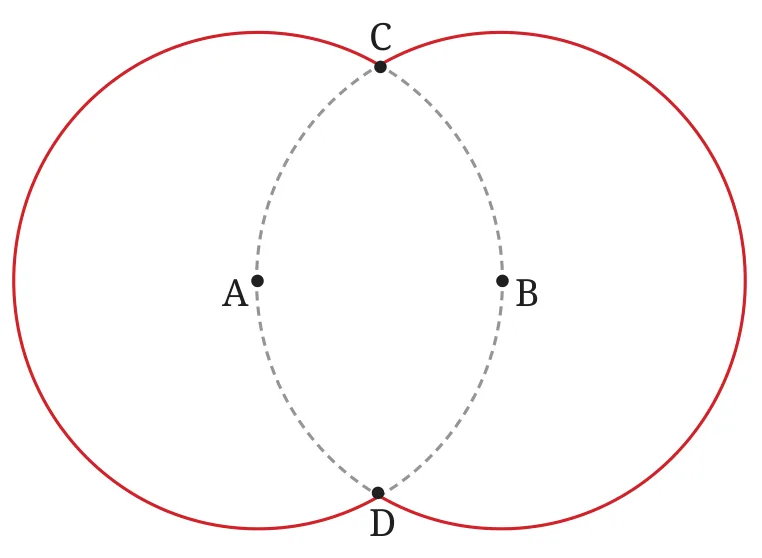
Example 1
AB = AC = BC = r, so △ABC is equilateral and ∠CAB = 60°. Likewise ∠BAD = 60°, so ∠CAD = 120°.
The hidden (dotted) arc of each circle is 120/360 = 1/3 of it, so the outside (red) arc is 2/3 of it.
Perimeter = 2 × 2⁄3 × 2πr = 8⁄3πr
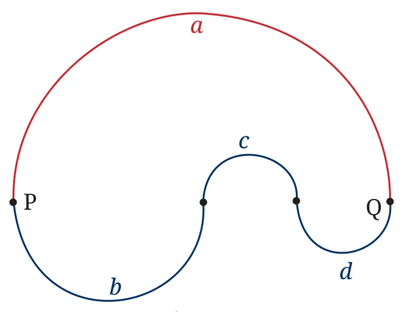
Example 2: the surprise
Let the radii be a′, b′, c′, d′. A semicircle of radius x has length πx.
Path 1 = πa′. Path 2 = π(b′ + c′ + d′).
But PQ = 2a′ = 2b′ + 2c′ + 2d′, so a′ = b′ + c′ + d′.
Both paths are equal!
📝 Remember
The length of a semicircle is π × radius = (π/2) × diameter. It grows in proportion to the diameter, so if you split a diameter into pieces and put a semicircle on each piece, the total length stays the same.
Exercise Set 6.1: solutions
Use π = 22/7 unless told otherwise. Tap a question to see the solution.
1The perimeter of a circle is 44 cm. What is its radius?
2Circumference, correct to 3 significant figures, for radius (i) 7 cm (ii) 10 cm (iii) 12 cm.
(ii) 2 × 22⁄7 × 10 = 440/7 = 62.857… ≈ 62.9 cm
(iii) 2 × 22⁄7 × 12 = 528/7 = 75.428… ≈ 75.4 cm
3Arc length: (i) r = 3.5 cm, angle 60° (ii) r = 6.3 m, angle 120°.
(ii) l = 2 × 22⁄7 × 6.3 × 120⁄360 = 39.6 × 1⁄3 = 13.2 m
4Perimeter of a sector of radius 14 cm and angle 75°.
Perimeter = arc + 2 radii = 18.33 + 28 = 46.33 cm (exactly 139/3 cm).
5Find the perimeters of the shapes in Fig. 6.14 (i) to (ix).
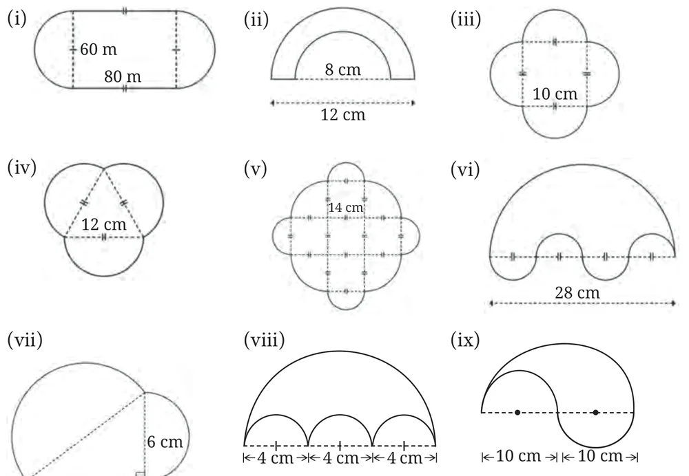
(i) Rectangle 80 m × 60 m with a semicircle (diameter 60 m) on each short side. Two semicircles = one circle of diameter 60.
Perimeter = 2 × 80 + 22⁄7 × 60 = 160 + 188.57 = 348.57 m
(ii) Half-ring: outer diameter 12 cm, inner diameter 8 cm, flat ends each (12 − 8) ÷ 2 = 2 cm.
Perimeter = π × 6 + π × 4 + 2 + 2 = 10π + 4 = 220/7 + 4 = 35.43 cm
(iii) Square of side 10 cm with a semicircle on each side (only the arcs are on the border).
Perimeter = 4 × π × 5 = 20π = 440/7 = 62.86 cm
(iv) Equilateral triangle of side 12 cm with a semicircle (diameter 12) on each side.
Perimeter = 3 × π × 6 = 18π = 396/7 = 56.57 cm
(v) All the dashed squares have side 14 cm. The border has 4 quarter circles of radius 14 cm (at the corners) and 4 semicircles of diameter 14 cm (at the ends).
4 quarter circles = one full circle = 2 × 22⁄7 × 14 = 88 cm. 4 semicircles = 4 × 22⁄7 × 7 = 88 cm.
Perimeter = 88 + 88 = 176 cm
(vi) A semicircle on 28 cm, and the base split into 4 equal parts of 7 cm each with a small semicircle on each.
Big arc = 22⁄7 × 14 = 44 cm. Small arcs = 4 × 22⁄7 × 3.5 = 44 cm.
Perimeter = 88 cm
(vii) Right triangle with legs 8 cm and 6 cm, so the hypotenuse is √(64 + 36) = 10 cm. A semicircle stands on each side.
Perimeter = π(10 + 8 + 6)/2 = 12π = 264/7 = 37.71 cm
(viii) A semicircle on 12 cm and three semicircles on 4 cm.
Perimeter = π × 6 + 3 × π × 2 = 12π = 37.71 cm
(ix) A semicircle on 20 cm (radius 10), and two semicircles of radius 5 (one up, one down).
Perimeter = π × 10 + π × 5 + π × 5 = 20π = 62.86 cm
📝 Shortcut
In (vi), (viii) and (ix) the small semicircles have the same total length as a semicircle on the whole line, just like Example 2.
6A car tyre has diameter 56 cm. (i) Distance for one revolution? (ii) Revolutions in 10 km?
(ii) 10 km = 10 × 1000 × 100 = 1,000,000 cm. Revolutions = 1,000,000 ÷ 176 = 5681.8…, so about 5682 revolutions (5681 complete ones).
7Total perimeter of all the petals in each flower (Fig. 6.15).
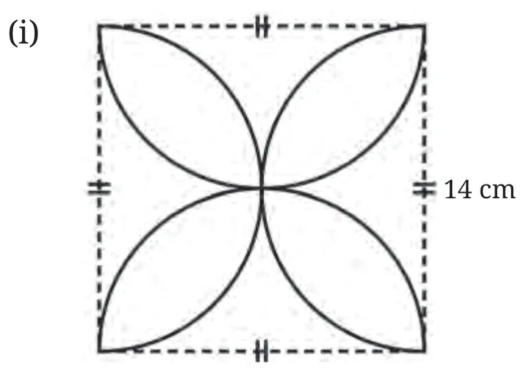
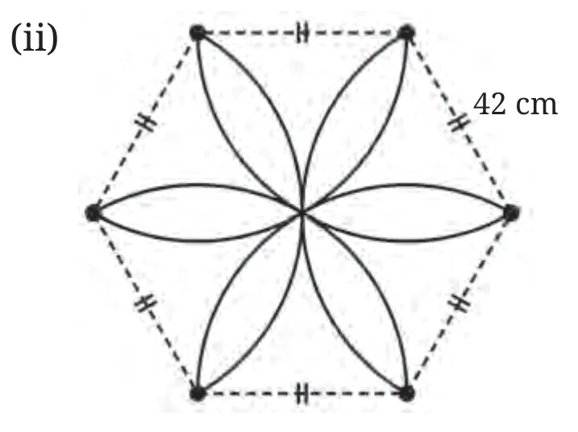
(i) Each arc is centred at the midpoint of a side, so its radius is 7 cm, and it passes through the two corners and the centre of the square: it is a semicircle. The 4 petals are made of 4 such semicircles.
Total = 4 × 22⁄7 × 7 = 88 cm
(ii) The centre O and two neighbouring vertices form an equilateral triangle of side 42 cm. Each petal edge is an arc of radius 42 cm centred at a vertex, turning through 60°.
One arc = 2 × 22⁄7 × 42 × 60⁄360 = 44 cm. Each petal has 2 arcs and there are 6 petals: 12 arcs.
Total = 12 × 44 = 528 cm
8The perimeters of two circles are in the ratio 5 : 4. Ratio of their radii?
Rectangle and parallelogram
Area is the amount of space a flat region takes up. The unit is a 1 × 1 square, of area 1 sq. unit (1 unit²).
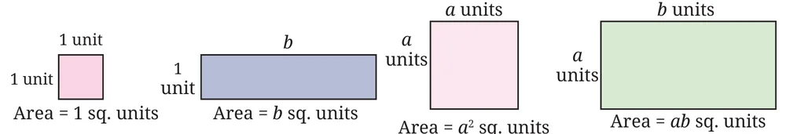
Area of a parallelogram
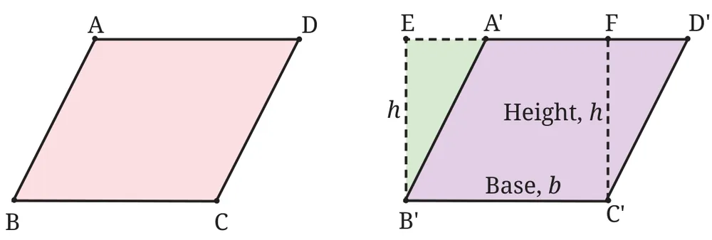
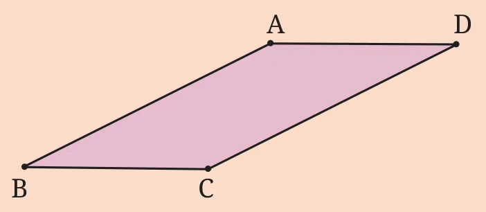
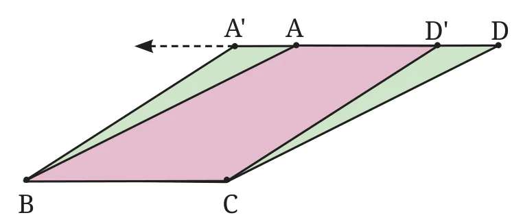
Think and Reflect: How do we fix the "gap" for a thin parallelogram?
Think and Reflect: Can we find the area of a parallelogram from its side lengths alone?
Area of a triangle
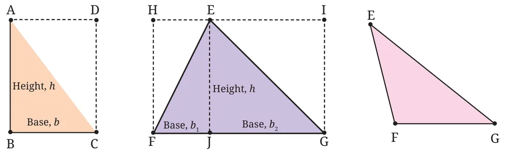
Enclose the triangle in a rectangle with the same base and height. Each part of the rectangle is cut in half by a side of the triangle, so the triangle is half the rectangle.
A nicer way: two copies make a parallelogram
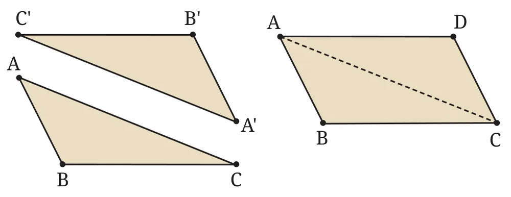
Why do the two copies make a parallelogram?
For an obtuse triangle (Fig. 6.20B) the rectangle trick seems to fail. What do we do?
A property of the median
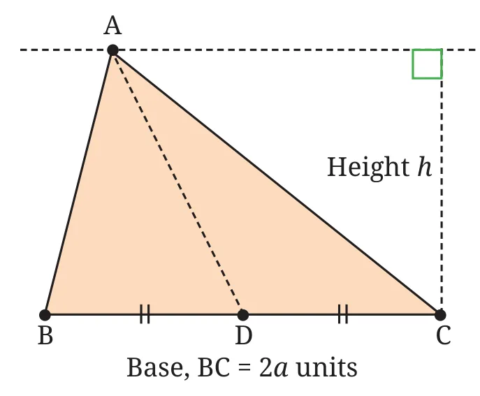
A median joins a vertex to the midpoint of the opposite side.
△ABD and △ACD have equal bases (BD = DC = a) and the same height h, so each has area ½ah.
Theorem
A median of a triangle divides it into two triangles of equal area, even though the two triangles usually have different shapes.
Think and Reflect: Can △ABD be cut into pieces that rearrange to cover △ACD exactly?
Think and Reflect: Rectangles with perimeter 40 units. How many? Largest area? Smallest area?
Heron's formula
If you know only the three sides a, b, c of a triangle, you can still find its area. First find the semi-perimeter s.
🎛️ Try it: Heron calculator
Checking it on known triangles
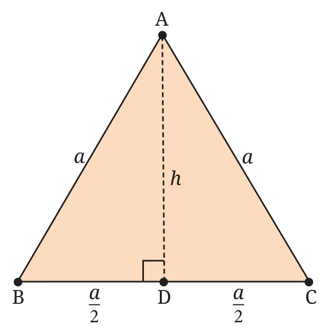
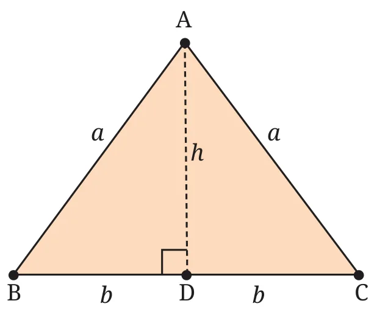
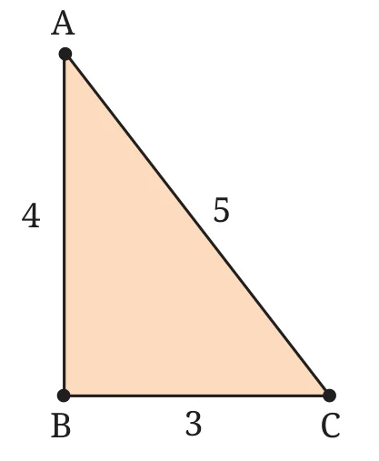
| Triangle | Heron's formula | ½ × base × height |
|---|---|---|
| Equilateral, side a (Ex. 3) | s = 3a/2; √(3a/2 · a/2 · a/2 · a/2) = (√3/4)a² | h = (√3/2)a; ½ × a × (√3/2)a = (√3/4)a² |
| Isosceles a, a, 2b (Ex. 4) | s = a + b; √((a+b)·b·b·(a−b)) = b√(a² − b²) | h = √(a² − b²); ½ × 2b × h = b√(a² − b²) |
| 3, 4, 5 (Ex. 5) | s = 6; √(6 × 3 × 2 × 1) = 6 | 3² + 4² = 5², right angle at B; ½ × 3 × 4 = 6 |
📝 The symbol ∴
∴ means "therefore". You will see it often in maths solutions.
Two more formulas, with circles
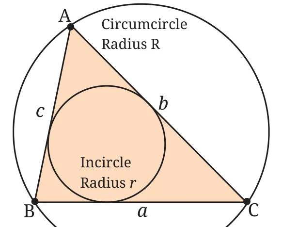
Brahmagupta's formula
Can we find the area of a 4-gon (quadrilateral) from its four sides alone? No. All three shapes below have sides 3, 3, 3, 3, but different areas.
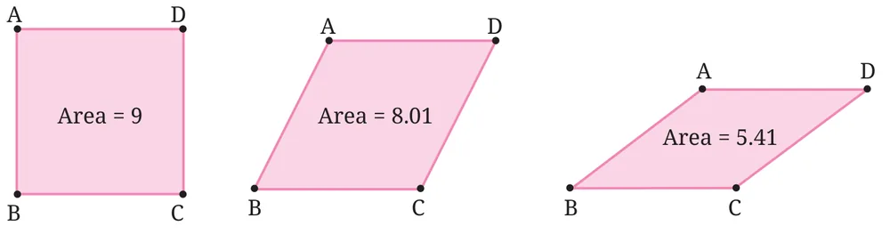
One such special property: the 4-gon is cyclic, meaning all four vertices lie on one circle. In 628 CE Brahmagupta found a beautiful formula for it.
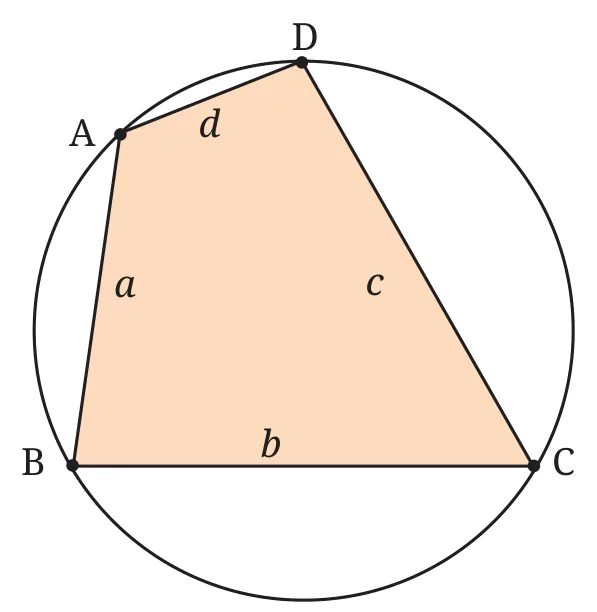
Example 6: rectangle (every rectangle is cyclic)
Sides a, b, a, b. s = a + b. Area = √(b · a · b · a) = √(ab · ab) = ab ✓
Example 7: isosceles trapezium (always cyclic)
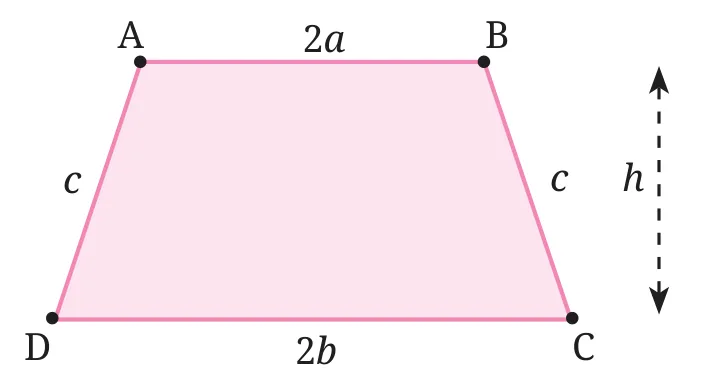
Sides 2a, c, 2b, c. s = a + b + c. Then s − 2a = c + b − a, s − 2b = c + a − b, s − c = a + b.
Area = (a + b)√[(c + b − a)(c + a − b)] = (a + b)√[c² − (b − a)²].
The height from B is h = √[c² − (b − a)²], so Area = (a + b)h = ½(2a + 2b)h, the usual trapezium formula ✓
✨ Heron is a special case of Brahmagupta
A triangle is a 4-gon with the fourth side d = 0 (vertices A and D meet), and every triangle is cyclic. Put d = 0: s = ½(a + b + c) and Area = √[(s − a)(s − b)(s − c)(s − 0)] = √[s(s − a)(s − b)(s − c)], which is Heron's formula. Brahmagupta's formula is a generalisation of Heron's.
Special case and generalisation
- A square is a special case of a rectangle: A = a² comes from A = ab with b = a.
- Isosceles right triangle from a² + b² = c² with a = b: c = a√2.
- (a + b)² = a² + b² + 2ab is (a + b + c)² = a² + b² + c² + 2ab + 2bc + 2ca with c = 0.
Squaring a rectangle
To square a shape means to construct a square with the same area. Here is how Baudhāyana (Śulbasūtra, 800 BCE) squared a rectangle ABCD with AD = a, AB = b, a > b.
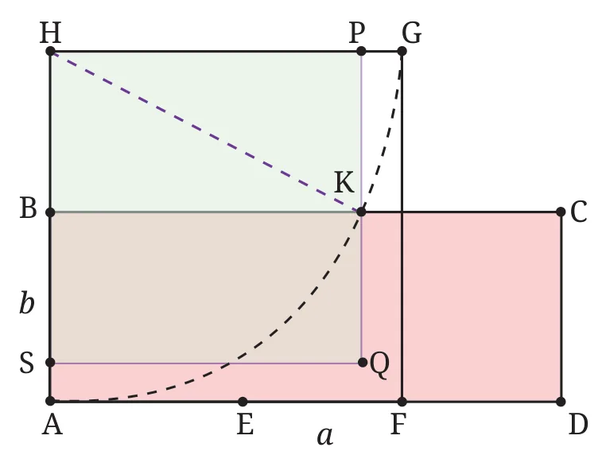
- Mark E on AD with AE = AB = b.
- Mark F, the midpoint of ED.
- Draw square AFGH on AF, with H on AB produced.
- With centre H, draw arc AG. It cuts BC at K.
- Through K draw a line parallel to AH, cutting GH at P.
- Square HPQS on HP has the same area as ABCD.
Why it works
AF = (AE + AD)/2 = (a + b)/2, so HG = HK = (a + b)/2 (HK is a radius of the arc).
BH = AH − AB = (a + b)/2 − b = (a − b)/2.
In right △HKP (KP = BH): HP² = HK² − BH² = ((a + b)/2)² − ((a − b)/2)² = (a² + 2ab + b² − a² + 2ab − b²)/4 = ab.
So area of square HPQS = HP² = ab = area of rectangle ABCD. It is the identity ((a + b)/2)² − ((a − b)/2)² = ab drawn as a picture.
Think and Reflect: How would you square a triangle?
Exercise Set 6.2: solutions
1Find the area of △ADE in Fig. 6.31.
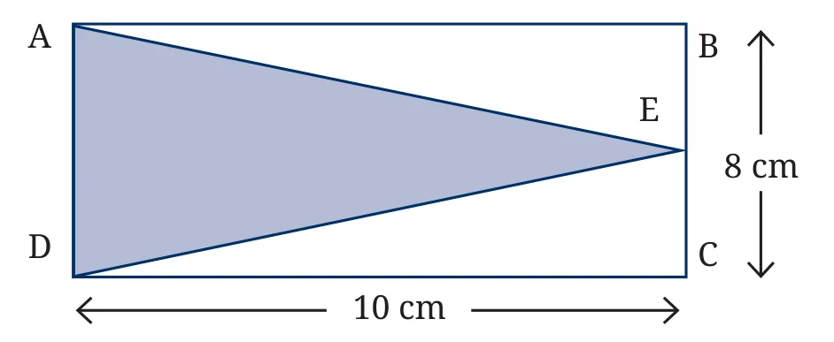
Area = ½ × 8 × 10 = 40 cm² (half the rectangle).
2Trapezium: parallel sides 40 cm and 20 cm, non-parallel sides 26 cm each. Area?
Height h = √(26² − 10²) = √(676 − 100) = √576 = 24 cm.
Area = ½ × (40 + 20) × 24 = 720 cm².
3Sides 8 cm and 11 cm, perimeter 32 cm. Area?
Area = √(16 × 8 × 5 × 3) = √1920 = 8√30 ≈ 43.82 cm².
4Sides in the ratio 3 : 5 : 7, perimeter 300 m. Area?
Area = √(150 × 90 × 50 × 10) = √6,750,000 = 1500√3 ≈ 2598 m².
5Rhombus with one diagonal twice the other, area 128 cm². Shorter diagonal?
d = √128 = 8√2 ≈ 11.31 cm.
6ABCD is a parallelogram; P and Q are on AB. Ratio area(△PCD) : area(△QCD)?
7O is any point on diagonal PR of parallelogram PQRS. Prove area(△PSO) = area(△PQO).
In △PQS, PM is a median, so area(△PQM) = area(△PSM). In △OQS, OM is a median, so area(△OQM) = area(△OSM).
Subtract (or add, if O is beyond M): area(△PQO) = area(△PSO). ∎
Another way: △PSO and △PQO share the base PO, and S and Q are at equal distances from the line PR (as QM = MS).
8Joining the midpoints of the sides of a 4-gon in order gives a parallelogram of half the area. Prove it.
In △ABD, BS is a median, so area(ABS) = ½ area(ABD). In △ABS, SP is a median, so area(APS) = ½ area(ABS) = ¼ area(ABD). Similarly area(CQR) = ¼ area(CBD).
Adding: area(APS) + area(CQR) = ¼ area(ABCD). In the same way area(BPQ) + area(DRS) = ¼ area(ABCD).
The four corner triangles take ½ of ABCD, so PQRS = ½ area(ABCD). ∎
9In △ABC, D is the midpoint of BC and P is any point on median AD. Show area(△ABP) = area(△ACP).
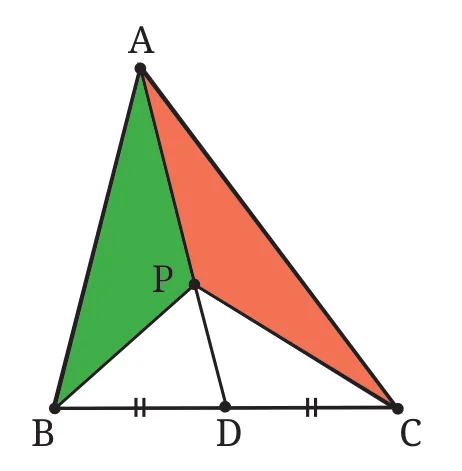
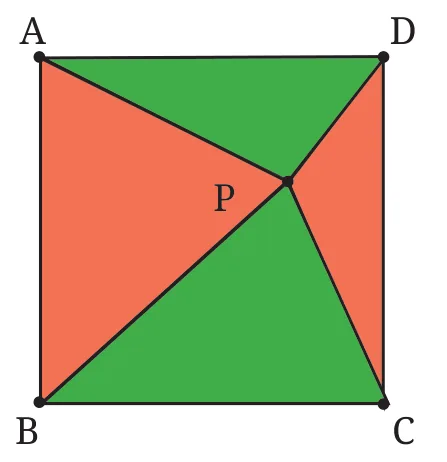
PD is a median of △PBC: area(PBD) = area(PCD).
Subtract: area(ABD) − area(PBD) = area(ACD) − area(PCD), i.e. area(△ABP) = area(△ACP). ∎
10Square ABCD with P inside. Ratio of red (△PAB + △PCD) to green (△PBC + △PDA)?
11D is the midpoint of AB, P is on BC, Q is on AB with CQ ∥ PD. Prove area(△BPQ) = ½ area(△ABC).
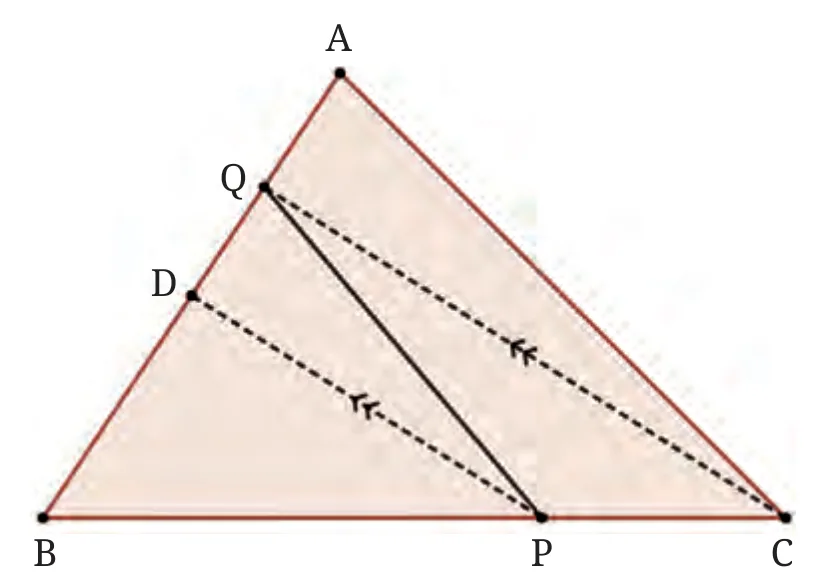
area(BPQ) = area(BPD) + area(PDQ) = area(BPD) + area(PDC) = area(BDC).
CD is a median of △ABC, so area(BDC) = ½ area(ABC). Hence area(△BPQ) = ½ area(△ABC). ∎
Area of a circle
For every square, perimeter² : area = (4a)² : a² = 16 : 1. For every equilateral triangle it is 9a² : (√3/4)a² = 36 : √3. For any shape this ratio depends only on the shape, not its size. So for circles too, C² : A is a fixed number, and so is A : r².
| Who | Formula for the area of a circle |
|---|---|
| Babylonians (before 1500 BCE) | A ≈ C²/12 |
| Egyptians (1500 BCE), Baudhāyana Śulbasūtra (800 BCE) | A ≈ (8d/9)² = (256/81)r² ≈ 3.16r² |
| Archimedes (c. 250 BCE) | A = πr² exactly, the same π as in C = 2πr |
Archimedes: "The area of a circle equals the area of a right triangle whose two legs are the radius and the circumference."
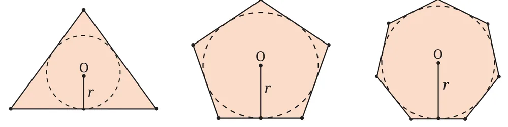
Nīlakaṇṭha's picture proof (c. 1500)
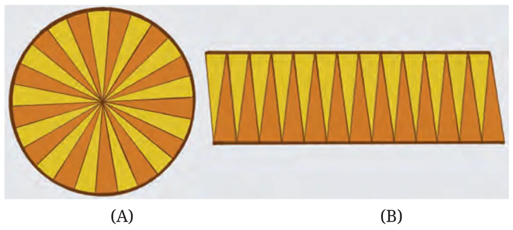
As the slices get thinner, the shape becomes a parallelogram with
- base = half the circumference = πr (half the slices' arcs are on top, half on the bottom),
- height = r.
Think and Reflect: Why do people love circular shapes?
Sector and segment
A sector is the region between an arc and the two radii to its ends (a slice of pizza). A segment is the region between an arc and its chord.
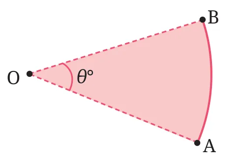
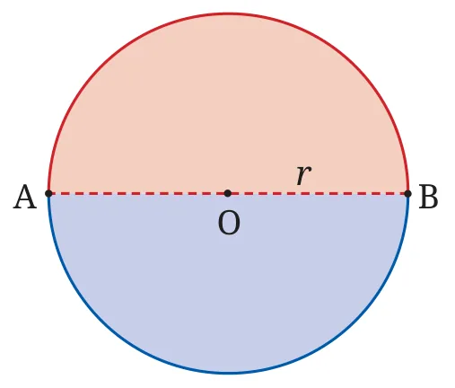
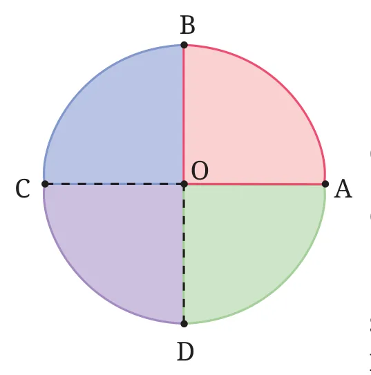
📝 Minor and major
The smaller sector/segment is the minor one, the larger is the major one. Major = whole circle − minor.
Exercise Set 6.3: solutions
1Area of a sector of radius 7 cm, angle 60°.
2Area of a quadrant of a circle with circumference 44 cm.
3Minute hand 7 cm long. Area swept in 10 minutes.
Area = 22⁄7 × 49 × 60⁄360 = 154/6 ≈ 25.67 cm².
4Chord of a circle of radius 10 cm subtends 90°. Areas of (i) minor sector (ii) major sector (π ≈ 3.14).
(i) Minor sector = 314 × 90/360 = 78.5 cm²
(ii) Major sector = 314 × 270/360 = 235.5 cm²
5Chord of a circle of radius 15 cm subtends 60°. Minor and major segments (π ≈ 3.14, √3 ≈ 1.73).
The triangle formed by the chord and two radii is equilateral (two sides 15 cm and angle 60°), so its area = (√3/4) × 15² = 1.73 × 225 ÷ 4 = 97.31 cm².
Minor segment = 117.75 − 97.31 = 20.44 cm² (more exactly 20.4375).
Circle = 3.14 × 225 = 706.5 cm². Major segment = 706.5 − 20.44 = 686.06 cm².
6Two wipers, each 28 cm long, sweep 120° without overlapping. Total area cleaned per sweep.
Two wipers = 4928/3 ≈ 1642.67 cm².
7*A chord of a circle of radius r subtends 60°. Show the minor segment = r²(π/6 − √3/4).
Minor segment = πr²/6 − (√3/4)r² = r²(π/6 − √3/4) ≈ 0.0906r². ∎
Note: the textbook prints this as πr²(1/6 − √3/4), which would be negative. The π belongs only with 1/6, as shown here.
8*Equilateral triangle inscribed in a circle of radius r. Show area of triangle : area of circle = 3√3 / 4π ≈ 0.413.
Area of triangle = (√3/4)(r√3)² = (3√3/4)r².
Ratio = (3√3/4)r² ÷ πr² = 3√3/(4π) ≈ 0.413. ∎
9*Square inscribed in a circle of radius r. Show the ratio of areas = 2/π ≈ 0.637.
Ratio = 2r² ÷ πr² = 2/π ≈ 0.637. ∎
10*Regular hexagon inscribed in a circle of radius r. Show the ratio = 3√3/2π ≈ 0.827. Why is it twice the answer to Q8?
Why twice? Join every other vertex of the hexagon to get the inscribed equilateral triangle of Q8. It covers the 3 triangles OAC, OCE, OEA, each equal in area to one of the 6 small triangles. So the triangle is 3 parts and the hexagon is 6 parts: the hexagon is exactly twice the triangle.
End-of-chapter exercises: solutions
Use π = 22/7 unless told otherwise. Questions marked * are challenge problems.
1Draw area figures for (a + b)(a − b) = a² − b² and (a + b + c)² = a² + b² + c² + 2ab + 2bc + 2ca.
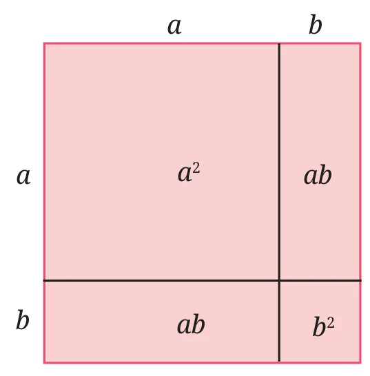
(a + b)(a − b) = a² − b²: from a square of side a, cut away a square of side b from a corner. The leftover L-shape (area a² − b²) splits into two strips. Turn the small strip and put it at the end of the big one: you get a rectangle (a + b) long and (a − b) wide.
(a + b + c)²: split each side of a square of side (a + b + c) into a, b, c. You get 9 pieces: a², b², c² on the diagonal, and two each of ab, bc and ca.
2Isosceles triangle, perimeter 40 cm, equal sides 15 cm each. Area?
Area = ½ × 10 × 10√2 = 50√2 ≈ 70.71 cm². (Heron: s = 20, √(20 × 5 × 5 × 10) = √5000 = 50√2 ✓)
3Isosceles triangle with base 10 cm and area 60 cm². Equal sides?
4Right triangle of area 54 cm² with one leg 12 cm. Perimeter?
Perimeter = 12 + 9 + 15 = 36 cm.
5Sides in the ratio 2 : 3 : 4, perimeter 45 cm. Area?
Area = √(22.5 × 12.5 × 7.5 × 2.5) = √5273.4375 = (75√15)/4 ≈ 72.62 cm².
6Sides 7 cm, 24 cm, 25 cm. Area in two ways.
Way 2 (Heron): s = 28. Area = √(28 × 21 × 4 × 3) = √7056 = 84 cm².
7Bicycle wheel of diameter 60 cm rotates 100 times. Distance?
8Area of a quadrant of a circle with circumference 66 cm.
9Car wheel of radius 28 cm. Distance in one turn, and turns in 1 km?
10*Two rectangles have the same area and the same perimeter. Are they congruent?
11Using the figure, show the area of a trapezium is ½(a + b)h.
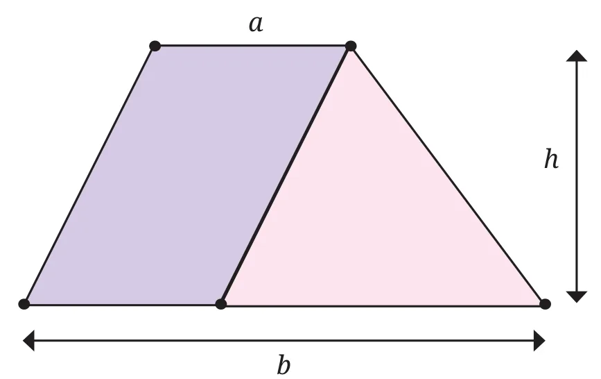
Area = ah + ½(b − a)h = ½(2a + b − a)h = ½(a + b)h. ∎
12Divide a trapezium into two triangles to get the same formula.
Area = ½ah + ½bh = ½(a + b)h. ∎
13Use two identical trapeziums to make a parallelogram.
14Show that the area of a kite is half the product of its diagonals, (i) using algebra, (ii) using geometry.
(i) Algebra: Area = area(ABC) + area(ADC) = ½ × AC × OB + ½ × AC × OD = ½ × AC × (OB + OD) = ½ × AC × BD.
(ii) Geometry: Draw the rectangle with sides AC and BD around the kite (sides parallel to the diagonals). The diagonals cut it into 4 small rectangles, and each side of the kite cuts one of them exactly in half. So the kite is half the rectangle: ½ × d₁ × d₂.
15Fitting congruent shapes: sides doubled or tripled.
(ii) Doubling every side doubles the base and the height, so the area becomes 2 × 2 = 4 times. Yes: join the midpoints of the sides of △PQR; this makes 4 triangles, each with sides a, b, c (midpoint theorem), so each is congruent to △ABC.
(iii) Tripling gives 3 × 3 = 9 times the area. Yes: divide each side of △PQR into 3 equal parts and draw lines parallel to the sides. You get 9 small triangles (6 pointing one way and 3 the other), all congruent to △ABC.
16*What fraction of the triangle (Fig. 6.43) and of the square (Fig. 6.44) is shaded?
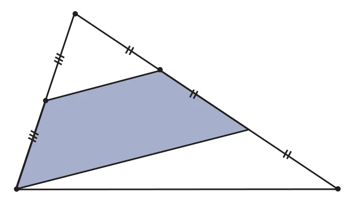
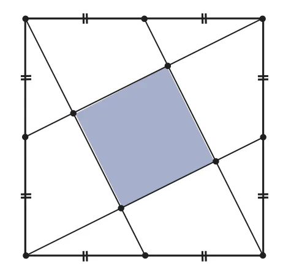
Fig. 6.43: Call the top vertex T. One side is cut at its midpoint M, the other side into three equal parts at P₁, P₂ (P₁ nearer T). The shaded part = △(T, bottom-left vertex, P₂) − △TMP₁.
△ with T and P₂ = 2⁄3 of the whole (same height, base 2/3). △TMP₁ = 1⁄2 × 1⁄3 = 1⁄6 of the whole.
Shaded = 2/3 − 1/6 = 1/2.
Fig. 6.44: Each corner is joined to the midpoint of a side, making four slanted lines and four small right triangles next to the shaded square. Turn each small triangle half a turn about the midpoint it touches: it fills the notch on the other side of that midpoint. The big square is then rebuilt as 5 copies of the shaded square (a plus shape). So the shaded square is 1/5 of the big square. Check: with side 2, the shaded square has side 2/√5, so area 4/5 out of 4.
17What fraction of the rectangle is covered by the circles (Figs. 6.45, 6.46)?
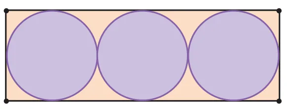
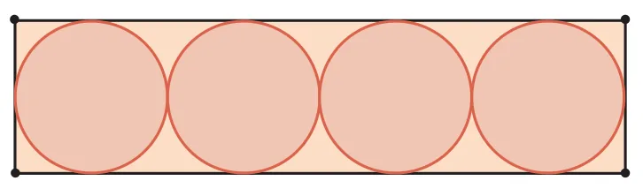
Fraction = nπr² ÷ 4nr² = π/4 ≈ 0.785 for both.
18Make and prove a conjecture for n circles (10, 20, 50).
Proof: as in Q17, nπr² ÷ (2nr × 2r) = π/4; the n cancels. For 10, 20 or 50 circles the answer is the same.
19*Nine identical rectangles make a large rectangle of area 72 cm². Perimeter of each small rectangle?
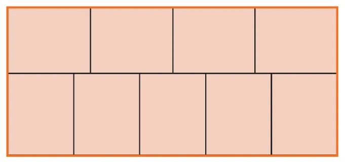
Each has area 72 ÷ 9 = 8 cm², so LW = 8. With W = 4L/5: 4L²/5 = 8, L² = 10, L = √10 ≈ 3.16 cm, W = 4√10/5 ≈ 2.53 cm.
Perimeter = 2(L + W) = 2 × 9√10/5 = 18√10/5 ≈ 11.38 cm.
20*Lines from a vertex to the trisection points of the opposite side: show the blue and red triangles are equal.
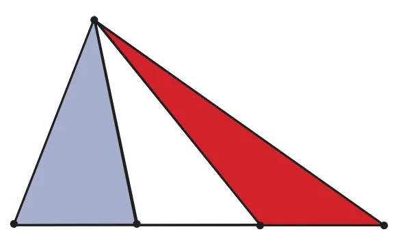
Cutting idea: cut each triangle along the line joining the midpoints of its two slanting sides, and give the small top piece a half turn about one of those midpoints. Each triangle becomes a parallelogram with base ⅓ of the big base and half the height. Two parallelograms with the same base and height can be cut and slid into each other (as in Figs. 6.17 and 6.19). So the blue pieces can be rearranged to cover the red triangle.
21*Quarter circle and two semicircles in a square: show regions A and B have equal area.
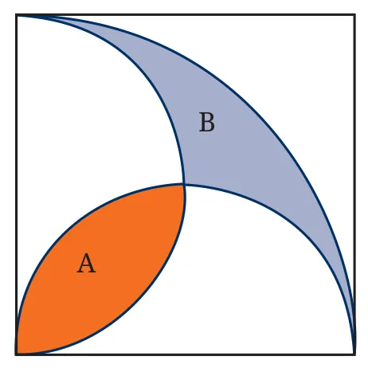
The two semicircles overlap in A. So the region they cover = πr² − A. The quarter circle = that region + B = πr² − A + B.
So πr² = πr² − A + B, giving A = B. ∎
22*Four semicircles inside a square of side 2: perimeter and area of the 4-petal flower.
Perimeter: 8 quarter arcs = 2 full circles of radius 1 = 4π = 88/7 ≈ 12.57 units.
Area: one petal = 2 × (quarter circle − right triangle) = 2(π/4 − ½) = π/2 − 1. Four petals = 2π − 4 ≈ 2.29 sq. units.
23*Concentric circles; chord BC = l of the larger touches the smaller. Show the ring area is ¼πl².
Ring area = πR² − πr² = π(R² − r²) = ¼πl². ∎ (You do not need to know R or r!)
24*Semicircles on the sides of a right triangle: show Area(A) + Area(B) = Area(C).
A + B = (π/8)(a² + b²) = (π/8)c² = C, because a² + b² = c². ∎
25*Two circles of radius r through each other's centres: area of the region common to both.
One segment = πr²/3 − (√3/4)r². Lens = 2 × that = r²(2π/3 − √3/2) ≈ 1.23r².
26*Three triangles A, B, C in a rectangle: show the rectangle's area is 2(A + C)(B + C)/C.
A = ½q(h − r), B = ½r(w − q), C = ½(h − r)(w − q).
A + C = ½(h − r)w and B + C = ½(w − q)h.
(A + C)(B + C) = ¼wh(h − r)(w − q) = ¼wh × 2C = ½wh·C.
So wh = 2(A + C)(B + C)/C. ∎
27*Quarter circle, semicircle and triangle: show the two shaded regions are equal.
Semicircle on AB (centre D, radius r√2/2): area = ½π(r²/2) = πr²/4.
Segment AFB (between arc AFB and chord AB) = quarter circle − △AOB = πr²/4 − ½r².
Moon AEBF = semicircle − segment = πr²/4 − (πr²/4 − ½r²) = ½r² = area of △AOB. ∎
This "lune" was first found by Hippocrates of Chios: a curved shape with exactly the same area as a straight-sided triangle.
Formula sheet
| Shape | Perimeter / length | Area |
|---|---|---|
| Square, side a | 4a | a² |
| Rectangle a × b | 2(a + b) | ab |
| Parallelogram | 2(sum of sides) | base × height |
| Triangle | a + b + c | ½ × base × height; √[s(s−a)(s−b)(s−c)] |
| Trapezium | sum of sides | ½(a + b)h |
| Rhombus / kite | sum of sides | ½ × d₁ × d₂ |
| Cyclic 4-gon | a + b + c + d | √[(s−a)(s−b)(s−c)(s−d)] |
| Circle, radius r | 2πr = πd | πr² |
| Semicircle | πr (arc) + 2r | ½πr² |
| Sector, angle θ | arc 2πr × θ/360, plus 2r | πr² × θ/360 |
| Segment | sector − triangle |
- π = circumference ÷ diameter, the same for every circle. π ≈ 22/7 ≈ 3.14, and π is irrational.
- Archimedes: 310⁄71 < π < 31⁄7. Zu Chongzhi: 355/113. Āryabhaṭa: 3.1416. Mādhava: π = 4(1 − 1/3 + 1/5 − 1/7 + …).
- A median divides a triangle into two triangles of equal area.
- Triangles on the same base and between the same parallels have equal area.
- If all lengths are multiplied by k, perimeter is multiplied by k and area by k².
Test yourself
Tap an option to see the right answer and the reason.
1. For every circle, circumference ÷ diameter equals…
C/D = π for all circles, so C = πd = 2πr.
2. The circumference of a circle of radius 14 cm (π = 22/7) is…
2 × 22/7 × 14 = 88 cm. (616 cm² would be its area.)
3. An arc of a circle of radius 21 cm subtends 60°. Its length is…
2 × 22/7 × 21 × 60/360 = 132 ÷ 6 = 22 cm.
4. Who gave the first exact formula for π, as an infinite series?
π/4 = 1 − 1/3 + 1/5 − 1/7 + … (Mādhava of Sangamagrāma).
5. Which statement is correct?
22/7 and 3.14 are only approximations; π cannot be written as a fraction.
6. The area of a triangle with sides 5, 12, 13 cm is…
s = 15, √(15 × 10 × 3 × 2) = √900 = 30. (It is right-angled: ½ × 5 × 12.)
7. A median divides a triangle into two triangles that are always…
Equal bases and the same height, so equal area, though usually different shapes.
8. Area of a sector of radius 14 cm and angle 90° (π = 22/7)…
¼ × 22/7 × 196 = 154 cm².
9. Brahmagupta's formula gives the area of…
√[(s−a)(s−b)(s−c)(s−d)] works only when all four vertices lie on a circle.
10. If the radius of a circle is doubled, its area becomes…
π(2r)² = 4πr². Area grows with the square of the scale.
11. Circles in a row inside a rectangle (touching each other and the sides) cover what fraction of it?
nπr² ÷ (2nr × 2r) = π/4 ≈ 78.5%, for any n.
12. In Baudhāyana's construction, which identity is drawn as a picture?
HP² = HK² − BH² = ((a+b)/2)² − ((a−b)/2)² = ab, so the square equals the rectangle.